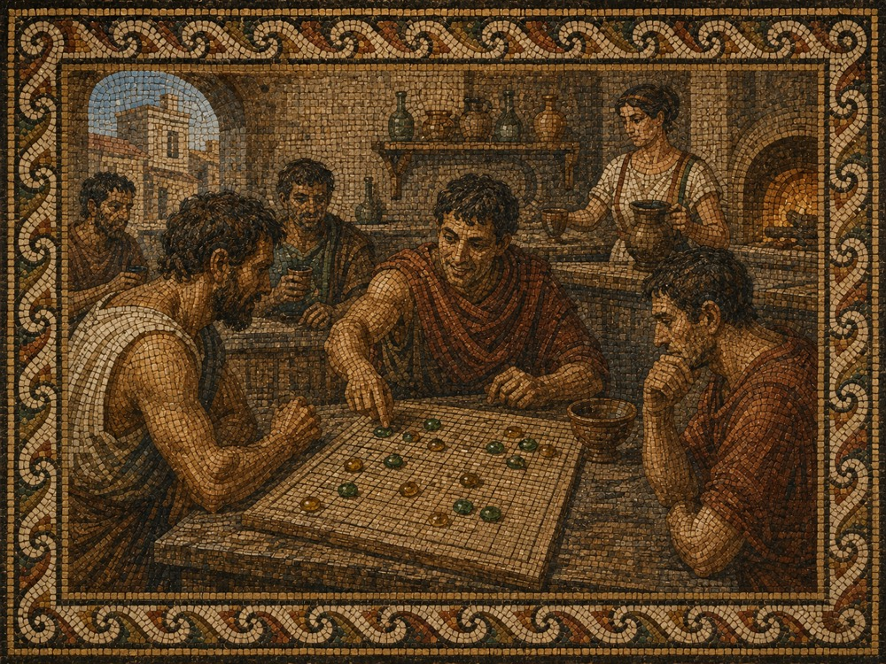
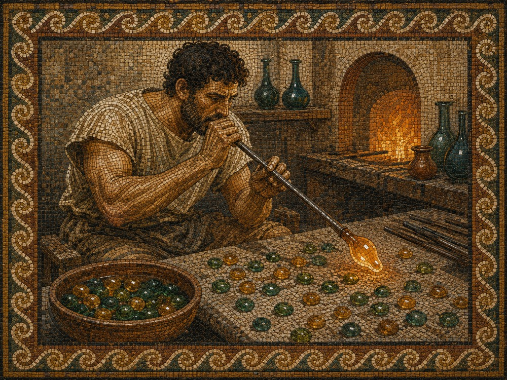
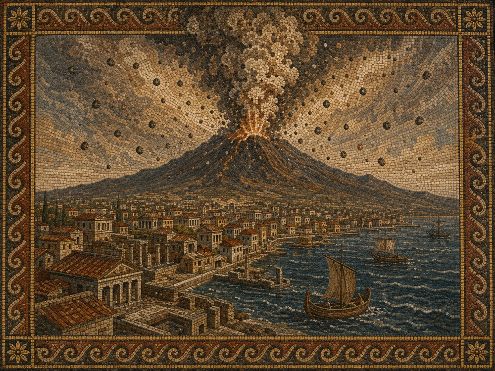
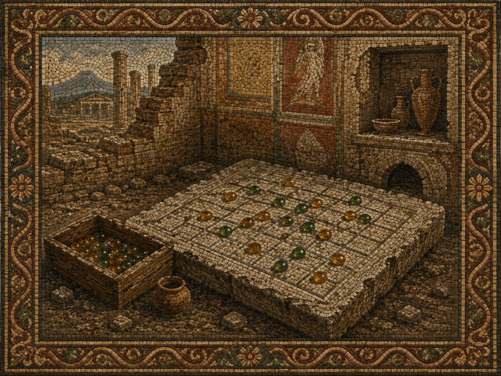

In the summer of 79 AD, the mountain above Pompeii was alive.
Not with fire — not yet — but with the low, restless tremors that the locals had grown so accustomed to that they no longer remarked on them. Vesuvius had shaken the region for years. It had cracked amphora, shifted doorframes, and sent wine sloshing from unattended cups. The citizens of Pompeii had learned to pour a little less and worry a little less, and life continued in the comfortable, unhurried rhythm of a prosperous Roman port city in high summer.
On the Via dell'Abbondanza, the main artery of the city, there was a thermopolium — a street-side tavern — run by a woman named Asellina, whose name is still scratched into the election notices on the wall outside. Her establishment was a favourite of soldiers, merchants, and the young men who did not yet need to be merchants. The counter was volcanic basalt, worn smooth by decades of elbows. The food was kept warm in terracotta vessels sunk into the stone. And at the back, where the light came in sideways through a narrow window, there was a gaming table.
It was here, in the months before the eruption, that a game was played which the men who played it simply called lapilli — little stones.

Mosaic depiction · Asellina's thermopolium, Via dell'Abbondanza
The pieces were not carved or purchased. That is what made them remarkable.
Three doors down from Asellina's thermopolium, a glassblower named Eros kept his furnace burning from before sunrise until well after dark. Each morning he swept his workshop floor and found them waiting: small rounded drops of glass that had fallen from the rod overnight and cooled where they landed — perfect little domes, smooth on the bottom, slightly convex on top, fitting cleanly between thumb and forefinger. Most were discarded. Some he melted back down. But the ones in the two colours his furnace most often produced — a deep sea-green from the copper in his sand, and a warm amber-yellow from the iron and sulfur that clung to everything near the mountain — those he swept into a clay pot by the door.
Someone from Asellina's had started collecting them. No one remembered exactly when or who. What they remembered was that the drops were the right size, the right weight, and that when you set them on a scratched grid of nineteen lines, they sat still and caught the light.

Mosaic depiction · Eros at the furnace, his glass drops cooling on the floor
The game that emerged from those glass drops was not Terni Lapilli, the old tic-tac-toe that children scratched on stepping stones. It was something deeper and more violent: a game of five, of encirclement, of the same custodial destruction that Roman legions practised on the field.
The object was to place five of your stones in a row — but the board did not stay still. A pair of your opponent's stones, caught between two of your own, was captured and removed. Flanked, and gone. The Romans had a word for this: intercipere — to seize in between. It was how they dealt with enemies. It was, the soldiers felt, entirely natural.
"A position that looked winning could be collapsed in two moves by a well-placed capture. A player who had given up five stones was not losing — he might be baiting a trap."
A man named Marcus Decimus Vitalis — a veteran of the Legio II Adiutrix, passing through Pompeii on his way to retirement in Puteoli — is said to have taught the full rules to Asellina's regulars sometime in the spring of that year. He had learned the game at a garrison in Dacia, he told them, from a Greek-speaking merchant who claimed it was older than Rome. Whether this was true no one could verify.
By August, the game had its own vocabulary in Asellina's back room. A line of three open stones was a tria, a threat. A line of four was a tessera — a tile, a piece, a word that meant something nearly complete. And the winning line of five was, of course, the lapilli itself: five small stones in a row, simple as the mountain above, and just as inevitable once the sequence had begun. The mountain rumbled outside, and the men inside did not look up.
· · ·
On the morning of August 24th, the mountain answered.
The eruption came in two phases. The first was lapilli — the real ones, the volcanic kind, pumice the size of a fist raining from a column of ash that rose eighteen miles into the sky. They fell for hours, filling the streets, collapsing roofs, burying the city under six metres of stone before the pyroclastic surge came at dawn and ended everything still living.

Mosaic depiction · The eruption of Vesuvius · August 24th, 79 AD
When archaeologists excavated the thermopolium centuries later, they found the counter intact, the food still in the vessels, the election notices still on the wall. They found dice. They found coins. In the back room, beneath a layer of compacted pumice, they found a rectangular stone table with a nineteen-by-nineteen grid scratched into its surface, and beside it, in what had once been a wooden box, a collection of small glass drops — green and amber, smooth on their flat bases, domed on top, sorted into two groups, worn with the particular polish that only comes from being picked up and set down thousands of times.
No one had played them since that August morning. They had been waiting in the dark for two thousand years.

Mosaic depiction · The board, as found · Pompeii excavations
The game that buried them had also preserved them.
That is the paradox of Pompeii, and the paradox of lapilli — the small stones that gave the game its name, and the small stones that fell from the sky and froze it in time. What the volcano destroyed, it also kept. What it ended, it made permanent.
We cannot know Marcus Decimus Vitalis. We cannot know if he made it to Puteoli. We cannot know who was winning when the mountain roared and the pieces scattered.
But we know the game. We know its shape and its logic and the particular pleasure of watching a pair of your opponent's stones vanish from the board. We know the three-in-a-row threat and the four-in-a-row inevitability and the five-in-a-row that ends everything.
The Romans knew it too. They played it with drops of glass from the furnace down the street, green and amber against a scratched grid, while the mountain that would bury them rumbled quietly outside.
We play it still.
The true history
That is the legend — fiction, and offered as nothing else. The real history is just as good a story. The game the modern world knows as Pente® was created by Gary Gabrel in Stillwater, Oklahoma, in 1977, on these same nineteen lines with these same two roads to victory. Its first world champions, Rollie Tesh and Tom Braunlich, became its first serious theorists — Tesh's Keryo variant and the tournament rule from Braunlich's era are both in this app, under their proper names. Pente is a registered trademark of Hasbro, Inc., with which we are not affiliated; that is why the game here wears a name and a legend of its own. Everything the app teaches applies unchanged at any Pente table, cardboard or glass — and the companion book's history chapter traces the whole lineage, from Edo-period Japan to a pizza restaurant in Oklahoma, with sources.